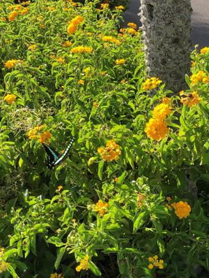

うるがいの話 ある日
最新: 自宅療養給付【うるがいの話 ある日】とは 一日だけのプログです
『うるがいの話』の最新一日だけのプログで、通信料が少なく経済的だ。カニの画像をクリックすると全ての日付が載る『うるがいの話』サイトを表示します
|
|
【うるがいの話】 うるがい(ｳﾙｶﾞｲ urugai)とは、『もずくがに』の名前でとても大きくなります。 |
|---|---|
|
|
【カミマヤーの話】 猫のことを方言でマヤーといいます。カミマヤー（kamimayaa）とは、神の猫のことです。 |
|
【たながぁの音楽】 たながぁ（ﾀﾅｶﾞｰ tanagaa）とは手長えびのことで、何種類かあり大きいのは車 エビぐらいになります。 |

|
【ぶながぁの話】 ぶながぁ(ﾌﾞﾅｶﾞｰ bunagaa)とは、赤い髪の毛、赤い身体、そして身長は１ｍ２０ｃｍ ぐらい、川の蟹を食べているの目撃された。場所は沖縄県国頭郡大宜味村のと ある村僕の隣近所に住んでいる爺さんから、聞いた話です。 |
|
|
【ギーマの話】 ギーマ(giima)とは、山原の里山に咲くスズランに似た、 花を付けます。実は食べられます、 気が付くと口の周りが紫になっています。 |
2022年09月02日 (金）自宅療養給付
18:03

『自宅療養給付対象縮小』と今日付けの新聞の見出しである。子供の保険会社
への自宅療養給付の申請を今日投函する。実際には入院していないわけだが、
診察日をＰＣＲ検査した日、子供はＰＣＲ費用を無料にするため結果を翌日に
した、そのため陽性判定した日が入院日となで、次がグレー退院した日がよく
分からない。厚生労働省等の定める解除基準に該当した日？、これって子供に
よると症状が出てから１０日間とこと。保険会社の説明資料では、保健所等か
ら通知された解除日とある、子供に確認すると、保健所との連絡は一回きりで
解除日なんか通知されないと言う。なんか、曖昧だな、子供の場合は４０度の
熱が出た日から、１０日間を解除日（退院）とした。みなし入院の日は７日間
で申請する。子供保険料は毎月６千５百円程、私が支払っている。子供が自分
で支払うように検討したが、とても無理である。もう一人のコドモも、私が支
払っていたが負担になり２年前に解約した。
１７時５７分 ビットコインの総資産 ￥８、１６２↑